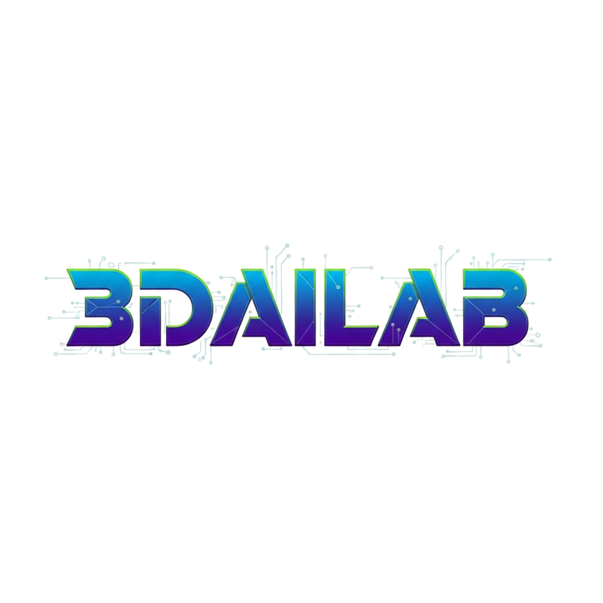

<!-- DaisyUI 导航栏 -->
<div class="navbar bg-[#003366] text-white shadow-lg fixed top-0 z-50 h-20 transition-all duration-300 w-full font-sans">
  
  <!-- 容器：px-6 控制左右两边的基础间距 -->
  <div class="w-full h-full flex items-center justify-between px-6">
    
    <!-- 左侧: LOGO -->
    <div class="flex-shrink-0 flex items-center">
      <a href="index.html" class="flex items-center hover:opacity-80 transition-opacity">
        <!-- 注意：h-48 可能会超出 20px 的导航栏高度，建议根据实际 Logo 形状微调 -->
        
      </a>
    </div>

    <!-- 右侧: 桌面端菜单 -->
    <div class="hidden md:flex flex-none items-center gap-1">
      
      <!-- 主页 -->
      <a href="index.html" class="btn btn-ghost text-base text-white font-normal hover:bg-white/10 hover:text-secondary px-3 flex items-center gap-2">
        <i class="fas fa-home"></i> 主页
      </a>

      <!-- 团队 -->
      <a href="team.html" class="btn btn-ghost text-base text-white font-normal hover:bg-white/10 hover:text-secondary px-3 flex items-center gap-2">
        <i class="fas fa-users"></i> 团队
      </a>

      <!-- 研究 (父链接下拉菜单) -->
      <div class="dropdown dropdown-hover">
        <div tabindex="0" role="button" class="btn btn-ghost text-base text-white font-normal hover:bg-white/10 hover:text-secondary px-3 flex items-center gap-2">
          <i class="fas fa-cube"></i> 研究 <i class="fas fa-chevron-down text-xs ml-1"></i>
        </div>
        <ul tabindex="0" class="dropdown-content z-[1] menu p-2 shadow-2xl bg-white rounded-box w-40 text-slate-800 mt-0 border border-gray-100">
          <li><a href="research.html" class="hover:bg-blue-50 hover:text-primary py-3">研究方向</a></li>
          <li><a href="paper.html" class="hover:bg-blue-50 hover:text-primary py-3">代表论文</a></li>
        </ul>
      </div>

      <!-- 资源 -->
      <a href="resources.html" class="btn btn-ghost text-base text-white font-normal hover:bg-white/10 hover:text-secondary px-3 flex items-center gap-2">
        <i class="fas fa-layer-group"></i> 资源
      </a>

      <!-- 动态 -->
      <a href="events.html" class="btn btn-ghost text-base text-white font-normal hover:bg-white/10 hover:text-secondary px-3 flex items-center gap-2">
        <i class="fas fa-newspaper"></i> 动态
      </a>

      <!-- 联系 -->
      <a href="contact.html" class="btn btn-ghost text-base text-white font-normal hover:bg-white/10 hover:text-secondary px-3 flex items-center gap-2">
        <i class="fas fa-envelope"></i> 联系
      </a>
    </div>

    <!-- 移动端: 汉堡菜单 -->
    <div class="dropdown dropdown-end md:hidden">
      <div tabindex="0" role="button" class="btn btn-ghost btn-circle text-white">
        <svg xmlns="http://www.w3.org/2000/svg" class="h-7 w-7" fill="none" viewBox="0 0 24 24" stroke="currentColor">
          <path stroke-linecap="round" stroke-linejoin="round" stroke-width="2" d="M4 6h16M4 12h16M4 18h7" />
        </svg>
      </div>
      <ul tabindex="0" class="menu menu-lg dropdown-content mt-3 z-[1] p-2 shadow-xl bg-white rounded-box w-64 text-slate-800 right-0">
        <li><a href="index.html">主页</a></li>
        <li><a href="team.html">团队</a></li>
        <li>
          <details>
            <summary>研究</summary>
            <ul>
              <li><a href="research.html">方向</a></li>
              <li><a href="paper.html">论文</a></li>
            </ul>
          </details>
        </li>
        <li><a href="resources.html">资源</a></li>
        <li><a href="events.html">动态</a></li>
        <li><a href="contact.html">联系</a></li>
      </ul>
    </div>

  </div>
</div>